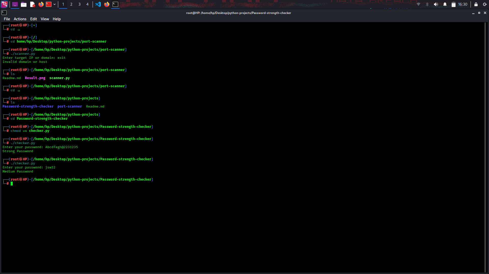

A Python-based cybersecurity project designed to analyze password strength using multiple security validation rules such as length, uppercase characters, numbers, and special symbols. The project helps users understand strong password creation and secure authentication practices.
The primary goal of this project was to build a simple security-focused utility capable of evaluating password complexity and promoting better password hygiene practices.

Successfully developed a beginner-level password strength checker capable of validating password complexity and encouraging secure password creation practices.
🚀 View on GitHub